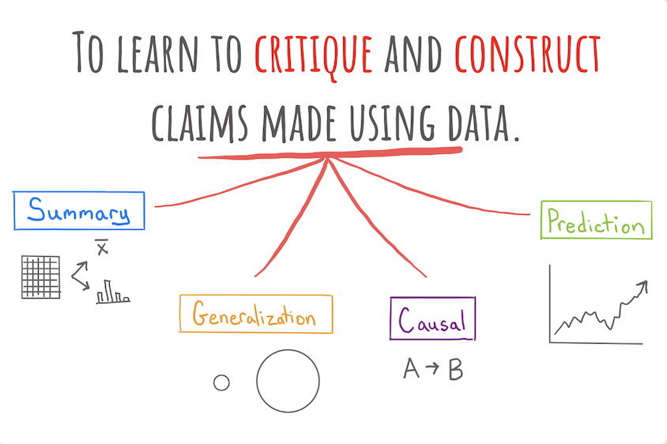

Understanding the World with Data
Intro and Syllabus
Welcome to Stat 20! We are very excited to have you here this semester. There are no reading questions for today’s content, but make sure that you have:
- gotten the name of your instructor and in-class tutors
- read the syllabus and asked any questions you have about it on your lecture’s corresponding Ed thread
- started the first lab assignment
The goal of our course is to construct and critique claims made using data. This raises the question: what type of claims can be made?
Types of Claims

- Summary
- A numerical, graphical, or verbal description of an aspect of data that is on hand.
Example: Using data from the Stat 20 class survey, the proportion of respondents to the survey who reported having no experience writing computer code is 70%.
- Generalization
- A numerical, graphical, or verbal description of a broader set of units than those on which data was been recorded.
Example: Using data from the Stat 20 class survey, the proportion of Berkeley students who have no experience writing computer code is 70%.
- Causal Claim
- A claim that changing the value of one variable will influence the value of another variable.
Example: Data from a randomized controlled experiment shows that taking a new antibiotic eliminates more than 99% of bacterial infections.
- Prediction
- A guess about the value of an unknown variable, based on other known variables.
Example: Based on reading the news and the price of Uber’s stock today, I predict that Uber’s stock price will go up 1.2% tomorrow.